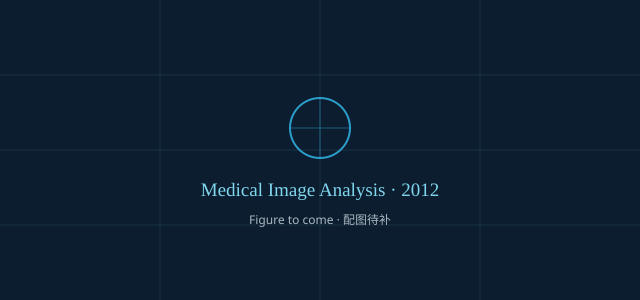
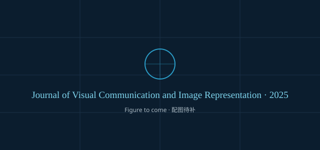
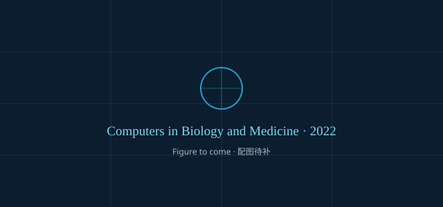
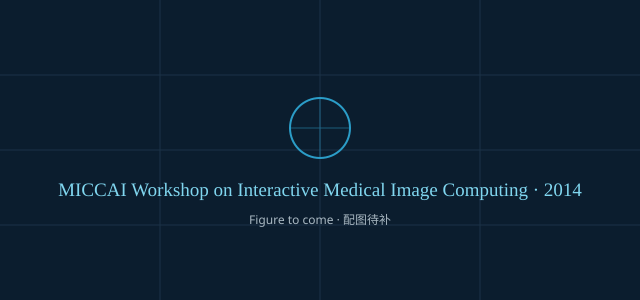

按方法 · 01
交互式三维图像分割
从鲁棒统计活动轮廓到深度学习：医生只需少量笔画即可驾驭的交互式分割——代表成果 Grow From Seed 自 2014 年起成为 3D Slicer 核心模块。
综述
从鲁棒统计活动轮廓到深度学习：医生只需少量笔画即可驾驭的交互式分割——代表成果 Grow From Seed 自 2014 年起成为 3D Slicer 核心模块。
- Grow From Seed——2014 年起为 3D Slicer 核心模块
- 鲁棒统计多目标分割（Medical Image Analysis 2012）
- 涂鸦监督、深度均衡模型、主动学习
07 · 代表工作
代表工作
每张卡片：上方配图，下方要点。
01

An effective and open source interactive 3D medical image segmentation solution
Scientific Reports · 2024
- Grow From Seed：少量笔画、实时三维反馈的友好交互分割。
- 被 3D Slicer 采纳为核心交互分割模块。
02

A 3D interactive multi-object segmentation tool using local robust statistics driven active contours
Medical Image Analysis · 2012
- 鲁棒统计活动轮廓的多目标三维分割。
- 3D Slicer 分割模块的基础。
03

AttenScribble: Attention-Enhanced Scribble Supervision for Medical Image Segmentation
Journal of Visual Communication and Image Representation · 2025
- 注意力增强的涂鸦监督降低标注成本。
- 基于涂鸦标签的弱监督分割。
04

An efficient deep equilibrium model for medical image segmentation
Computers in Biology and Medicine · 2022
- 显存高效的深度均衡模型分割。
- 不存储中间状态的无限深度行为。
05

A multi-task learning network with boundary regression for automatic ultrasound image segmentation
Biomedical Signal Processing and Control · 2026
- 边界回归多任务网络的超声图像分割。
- 区域与边界联合监督提升轮廓质量。
06
Cost-Effective Annotation: A Novel Deep Active Learning Approach for Automated Whole Breast Ultrasound Anatomy Segmentation
中国生物医学工程年会（oral） · 2025
- 深度主动学习降低全乳超声标注成本。
- 中国生物医学工程年会口头报告。
07

An Effective Interactive Medical Image Segmentation Method Using Fast GrowCut
MICCAI Workshop on Interactive Medical Image Computing · 2014
- 快速 GrowCut 交互式分割。
- 较早集成进 Slicer 工作流的交互分割工作。